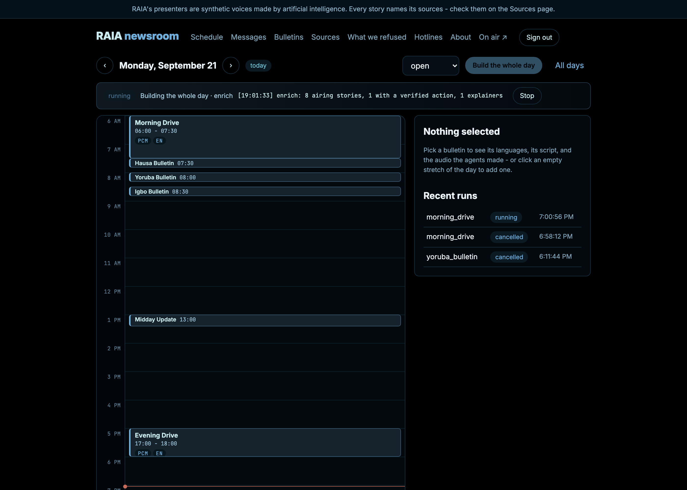

A civic radio station produced by AI agents, where every sentence that goes on air traces back to a named source you can check — and everything the station refused to air is published beside what it did.
Dashboards, portals and PDFs assume a smartphone, data, literacy, and English. Radio reaches people while they work, in the language they think in, on the cheapest device in the house.
A station that invents a date, a figure or a hotline number does more damage than one that stays silent. Generative tools make broadcast cheap — and make being confidently wrong cheap too.
So the question was never “can a model write a bulletin?” It was: what has to be true in the code before a machine is allowed to say something out loud?
Someone who wants to know what an institution decided this week, what it means for them, and what they can do about it — in Hausa, Yoruba, Igbo, Pidgin or English. They press one button and drop into whatever is on air, the way you tune a dial.
A small civic team — one editor, no studio — who sets the day's programme on a calendar, reads what the agents wrote, edits a script, and presses Generate. Overnight the station builds the next day by itself.
Sixteen stages, each checkpointed and re-runnable. Bulletins air on a fixed clock from measured durations, so everyone listening in a language hears the same sentence at the same moment. Nothing slow happens while a listener waits: the day is rendered in advance.
In this system a language model never:
Models write and translate. Everything a listener could be harmed by is decided in code that can be read, tested, and pointed at.
In February 2026 INEC fixed the presidential election for 20 February 2027, then revised it to 16 January 2027. The articles carrying the old date are still online, and a naive summariser will happily read them out.
RAIA's verifier is tested against those real archived pages: a settled fact beats an official source, which beats the later report. It must air January — and when the official source is removed from the test, the later report must still win.
For figures with no official source, the contradiction is marked unresolved and neither number airs.
90 were sensitive and need a human editor · 54 could not be verified · one stated a fact the sources did not support · one promised a segment that would not air.
Every refusal is published with its reason on the site, next to what did air. Transparency about silence is the part most systems hide.
Each number read on air was confirmed on the agency's own page, with the date it was checked. The three that failed are listed as not aired rather than guessed at.
Listeners reach the station on WhatsApp. Numbers exist only as a salted hash; the thread expires on a database TTL; a question airs only with consent, and only as a first name and a city.
The presenters are synthetic — and the station says so once an hour, in every language, on every page, with no way to switch it off.
English, Hausa, Yoruba and Igbo bulletins rendered on an M1 laptop with open weights (YarnGPT2). Pidgin is written, translated and gated, and publishes as text until a voice model is routed in — one line of configuration.

The marginal cost of another language is a voice model and a translation pass, not another newsroom. Hausa, Yoruba and Igbo listeners get the same verified civic reporting on the same day as English ones.
Election dates, budget figures, hotline numbers and “what you can do about it” reach people who will never open a ministry PDF — with every claim traceable to the outlet that reported it.
A community station can run this: set the clock, watch the calendar fill overnight, edit a script, press Generate. No studio, no presenters, no night shift.
No native speaker has yet signed off the Hausa, Yoruba and Igbo audio; Pidgin has no voice; WhatsApp is not on a live number. All stated in the README, because a trust project that hides its gaps is arguing against itself.
Everything it aired, and everything it refused, is published beside it — with the source, the timestamp, and the rule that decided.